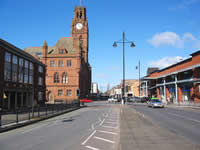
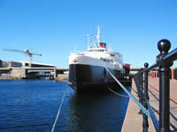
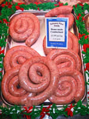
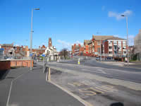

Barrow in Furness Tourist Information
Barrow is a mix of traditional and modern shops and stores and has one of the largest indoor markets in the region where helpful traders advise on, and specialise in the sale of locally produced food. Here, on the tranquil Furness Peninsula, Barrow stands close to large tracts of unspoiled coastline, nature reserves, historic sites and ancient churches. A bridge connects the town to the 10 mile length of Walney Island, which, as well as being the site of a popular caravan park, is occupied by two of the most important nature reserves of flora and fauna in the country. Purpose built visitor trails and observation hides are provided. For more details www.walney-island.com Not to be missed is a visit to Piel Island with its castle and famous inn which is reached by a short ferry crossing. The inn is the only permanently occupied building on the island where traditionally, the resident landlord is crowned “King of Piel” and in addition to the duties of “mine host” is required to maintain the island in a clean and tidy condition. See www.pielisland.co.uk The development of Barrow is well documented in the Dock Museum. It charts the rise of the town to a position as one of the most important shipbuilding centres in the world to the present day. The annual Walking Festival throughout the month of July is one of Barrow's main attractions in which all categories of age and skills can take part. For these and other events in Barrow and across the region please go to our Cumbria Events Page. Visitor accommodations are friendly well run establishments. There's something for everyone in a list of hotels, guest houses, bed and breakfasts, self-catering and caravan/camping sites both in the town and the nearby communities of Dalton-in-Furness and Askham-in-Furness. Barrow, standing close to an area defined as a “Hidden Britain Centre” and having a full range of facilities and amenities, certainly qualifies as a worthwhile destination for those choosing to holiday on the western side of the region. |
    |
 Find out more information by visiting the Furness website: www.boostingfurness.co.uk Find out more information by visiting the Furness website: www.boostingfurness.co.ukYou may also download their very useful Discover Furness brochure here. The file is quite large (20mb) and may take some time to download with slower connections. Hard copies are available from the site also. Buying a hard copy entitles you to discounts at participating attractions. |
Barrow Attractions |
The Town
A verse from the poem “A Breed Apart” by James F. Dunn is a fitting introduction.
"Listen to a Barrow lad boast of his abbeys vaulted trees.
Let him tell you of Gods own country surrounded by the seas.
Pause and let him fondly muse of Lakeland fells beyond,
Where Wordsworth, Coleridge with Southey roamed and forged a
fraternal bond."
This clearly illustrates Barrows enviable position as a holiday centre.
Seasides, lakesides, fellsides and countryside are all close by. Within the town are a wide range of well known High Street shopping outlets, the largest indoor market in the region and a variety of specialist shops. It is a popular destination for the colourful nightlife of theatre, cinemas, clubs, clubs and restaurants.
Piel Island
Situated close to Walney Island and Roa Island. Ruins of a 14th C.castle and a shoreline which attracts thousands of shore birds and seals. Trips to the seal observation areas and ferry crossings on request via the Ship Inn Public House.
Campers welcome on the island.
Email: pielisland@tiscali.co.uk
Phone: 07516453784
Barrow Festival of the Sea
An annual event held in the early summer and attracting thousands of visitors. Check for details and timings at Barrows Tourist Information Centre.
Email: touristinfo@barrow.gov.uk
Phone: 01229 876505
Furness Abbey
The extensive remains of the ancient Cistercian monastry stands in “The Vale of Deadly Nightshade” a little way outside the town. The red sandstone arches are mentioned in Wordsworths “Prelude”. In 1322, Robert the Bruce and his army spared the monastry from destruction after demanding and receiving a substantial ransom before moving on to destroy much of Cartmel Priory. Visitors may wish to follow up the story of the “Poisoned Chalice” which tells of the mysterious murder by fellow monks of Abbot Lawrence.
Opening times April to September 10am- 5pm. daily. October to March, Thursday & Sunday, 10am-4pm. Closed Christmas and New Year. Dogs allowed on leads.
Phone: 01229 823420
Bee Keeping
Furness and District Bee-Keepers Association. A live bee show where members of the public are invited to don a safety suit and go inside to experience the opening of a bee hive.
www.furnessbeekeepers.co.uk
Barrow and Peninsula Walking Festival
An annual mid-summer event for all abilities usually held in July.
For timings, check with the Barrow Tourist Information Centre or our Lake District Events Page.
North and South Walney Nature Reserves
Located on Walney Island, Barrow in Furness
The nature reserves include important flora and fauna, including the natterjack toad and eider duck.
Sandscale Haws Nature Reserve
A mosaic of sand dunes, dune slacks, saltmarsh, shingle, grassland and freshwater marsh, supporting a variety of important flora and fauna.
Located on the southern side of the Duddon Estuary, 7 km north of Barrow-in Furness.
Furness Owl Centre
See over 100 owls on display. The centre has facilities for a family day out, including:- Children's play area, food outlet, picnic areas, education centre and toilets.
Sowerby Woods, Barrow-in-Furness
www.furnessowls.co.uk
Barrow Park
Set in 45 acres, escape the hustle and bustle of the town centre and visit Barrow Park for some peace and tranquillity!
Accessed from Abbey Road, Park Drive, Park Avenue and Greengate Street.
Lazer Zone and Play Zone
Exciting and futuristic lazer tag facility. A combination of sport and modern technology.
PlayZone features learning and development through magical adventure play. Kids Indoor Adventure Play Centre.
Custom House, 1 Abbey Road.
Phone: 01229 823823
Colony Gift Corporation
The UK's leading candle manufacturer and the most experienced producer of scented candles in Europe . The factory outlet is open to visitors.
Lindal-in-Furness, Ulverston, Cumbria. LA12 0LD
Phone: 01229 461102
Fax: 01229 461101
Dock Museum
This is Barrows award winning major attraction. It details the history of the towns’ development with the help of exhibits and a film show. The maritime history is well represented by a display of superb ship models. Souvenir shop, café, coffee shop, adventure playground all set in landscaped grounds. Open all year and year round events. Free admission for all.
Phone: 01229 894444
www.dockmuseum.org.uk
Barrow Angling Club and Furness Fishing Association
Catering for and holding the fishing rights in local rivers, tarns and reservoirs.
Sea-fishing is excellent from the shoreline around Walney Island and from Piel Island . Some unique varieties of fish can be caught a few miles off the coast.
www.ffacoarse.org.uk
Park Vale Sports Centre
Facilities include a 400-metre all-weather athletics track and facilities for netball, tennis, hockey, volleyball, rugby and football.
Walney Island
Phone: 01229 473543.
www.bfsac.free-online.co.uk
The Park Leisure Centre
'The Park' Leisure Centre is an innovative complex situated in Barrow Park, the leisure centre offers a number of excellent facilities, including a 25-metre swimming pool and a free-form leisure pool with wave machine, flume and water cannons, a six-court sports hall, climbing wall and a large fitness suite.
Phone: 01229 871146
Dalton Leisure Centre
Dalton Leisure Centre is a superbly equipped modern leisure centre with a 20-metre swimming pool, which includes a giant frog waterslide, glass-backed squash courts, a multi-purpose gym, cardio-vascular suite and other sports facilities.
Phone: 01229 463125
Walking
Barrows dominant position on the Furness Peninsula, plus all its social and cultural amenities and wide range of holiday accommodation make it a convenient base from where walkers can explore the beauty of the Furness and Coniston Fells. Coniston Old Man, Swirl How, Dow Crag, Grey Friar, Black Sails, all popular walking destinations, and the picturesque waters of Seathwaite Tarn, Levers Water, Low Water, Goats water and Blind Tarn are all within easy reach. The Coastal Route from Barrow to Ulverston, the Cistercian Way from Grange-over-Sands to Roa Island and Red Man Way together with Discover Barrow On Foot which is a selection of easy routes and, wheelchair friendly, provide opportunities for all abilities to enjoy not only the beauty of the area but also its rich history. Nearby towns, Askham, Dalton-in-Furness and Irelith.
The Walney to Wear Cycle Route
A new National Cycle Network Regional Route across the north
(The Cumbrian Cycle Way traverses the Furness peninsula.)
www.cyclingw2w.info
Horse Riding
Horse riding facilities are available through Seaview Riding School
Phone: 01229 474251 or 01229 475315
The Barrow Golf Club at Hawcoat
Phone: 01229 825444
Furness Golf Club on Walney Island
Phone: 01229 471232
Both have 18 holes and are reasonably priced.
Furness Golf Centre
Furness Golf Centre has a driving range and a 9 hole course.
Phone: 01229 465870
The Lakes Gliding Club
The Lakes Gliding Club, which operates from Walney Airport , can arrange trial flights for visitors. These usually take place on Saturday and Sunday mornings from 10.00 a.m. onwards.
Phone: 01229 821935 or 01229 837494
www.lakesgc.co.uk
Cumbria All Terrain C.A.T ( UK ) Ltd
One of the North West 's Premier 4X4 driver training centres, featuring landrovers or quad bikes. Bookings by the hour, half day or full day.
Greengate St. Barrow
Phone: 01229 835463
Hollywood Park
Offers a wide choice of shopping, leisure facilities and food, including: Comet, Currys, Dreams, Apollo Cinema (6 Screen), Nuffied Health Fitness and Well Being Centre , Top Ten Bingo, McDonalds. KFC, Pizza Hut, PC World.
Forum 28
An award-winning multi-purpose Arts Centre, which offers theatre, variety, regular popular shows, concerts and dancing.
Phone: 01229 820000
Art Gene Gallery
An independent artist led initiative exhibiting a quality programme of international contemporary art exhibitions, and hosting high profile artists residencies from it's extensive studios.
Phone: 01229 825085
www.artgene.co.uk
Food and Drink |
The Abbey Tavern
Abbey Approach, Furness Abbey, Barrow in Furness
Phone: 012298 25359
Breezers
1 Empress Drive Walney, Barrow in Furness
Phone: 012294 73600
Cross Keys Hotel
Preston Street , Barrow in Furness
Phone: 012298 28447
Diamond
250 Dalton Road, Barrow in Furness
Phone: 012298 25475
The Golden Village
36 Dalton Road, Barrow in Furness
Phone: 012294 30133
Harbour Hotel
1 Strand, Barrow in Furness
Phone: 012298 20066
Monihar
252 Dalton Road, Barrow in Furness
Phone: 012294 32166
The Owl and Pussycat
Hindpool Road, Barrow in Furness
Phone: 01229 824334
Fax. 01229 825712
Roundhouse
Biggar Bank Road Walney, Barrow in Furness
Phone: 012294 73996
Pizzeria Italia
9 Furness House Dalton Road, Barrow in Furness
Phone: 012298 33268
Salvana's
79-81 Cavendish Street, Barrow in Furness
Phone: 012298 23838
Station Buffet
Barrow Station Abbey Road, Barrow in Furness
Phone: 012298 34458
Yang Tze River
88 Duke Street, Barrow in Furness
Phone: +44 (0)12298 71222
Transportation |
J C Taxis
279 Rawlinson St , Barrow-in-Furness, LA14 1DH
Phone: 01229 823200
Acacia Cars
54 Crellin St , Barrow-in-Furness, LA14 1DS
Phone: 01229 434343
Z Cars
Slater St , Barrow-in-Furness, LA14 1SJ
Phone: 01229 836634
Coastline
109 Ramsden St , Barrow-in-Furness, LA14 2BW
Phone: 01229 430430
Barrow Cars Ltd
amsden Sq, Barrow-in-Furness, LA14 1LL
Phone: 01229 432432
Barrow Cars
Duke St, Barrow-in-Furness, LA14 1HU
Phone: 01229 820005
A1 Cars (Barrow) Ltd
Hardy St , Barrow-in-Furness, LA14 2HA
Phone: 01229 838383
Barrow Cars
Salthouse Mills Ind Est/Salthouse Rd, Barrow-in-Furness, LA13 0DH
Phone: 01229 870666
Avon Cars
Promenade, Walney, Barrow-in-Furness, LA14 3QE
Phone: 01229 470777
Park Lane Travel
4 Park Lane, Walney, Barrow-in-Furness, LA14 3JA
Phone: 01229 471307
Dalton Cars
78 Market St, Dalton-in-Furness, LA15 8DJ
Phone: 01229 462499
Tudor Cars
Long La, Stainton With Adgarley, Barrow-in-Furness, LA13 0NH
Phone: 01229 466999
Capital Cabs (Dalton) Ltd
Nat West Bank Chambers/67 Market St, Dalton-in-Furness, LA15 8DL
Phone: 01229 466758